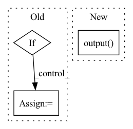

Pattern ID :39565

Before Change
// Transcription network: input-output dependency
TN_output = params.encoder_crdnn(feats, init_params=init_params)
TN_output = params.encoder_lin(TN_output, init_params)
if stage == "train":
_, targets, _ = y
targets = targets.to(params.device)
// Prediction network: output-output dependency
decoder_input = prepend_bos_token(
targets, bos_index=params.blank_id
)
PN_output = params.decoder_embedding(
decoder_input, init_params=init_params
)
PN_output, _ = params.decoder_gru(
After Change
TN_output.unsqueeze(2), PN_output.unsqueeze(1),
)
// projection layer
outputs = self.modules.output(joint)
outputs = self.hparams.log_softmax(outputs)
if stage == sb.Stage.TRAIN:
return outputs, lens
else:
In pattern: SUPERPATTERN
Frequency: 3
Non-data size: 3
Instances
Fragment ID: 112636988
Project Name: speechbrain/speechbrain
Commit Name: 6f252e43bf5eaabf7c9f5fc881571c72c09321d5
Time: 2020-11-02
Author: a.heba@irit.fr
File Name: recipes/minimal_examples/neural_networks/ASR_Transducer/example_asr_transducer_experiment.py
M Class Name: TransducerBrain
N Class Name: TransducerBrain
M Method Name: compute_forward(4)
N Method Name: compute_forward(5)
M Parent Class: sb.Brain
N Parent Class: sb.core.Brain
M File Name: recipes/minimal_examples/neural_networks/ASR_Transducer/example_asr_transducer_experiment.py
N File Name: recipes/minimal_examples/neural_networks/ASR_Transducer/example_asr_transducer_experiment.py
M Start Line: 22
M End Line: 68
N Start Line: 11
N End Line: 45
'>
Before Change
if self.readout == "sum":
hg = dgl.sum_nodes(g, "h")
elif self.readout == "max":
hg = dgl.max_nodes(g, "h")
elif self.readout == "mean":
hg = dgl.mean_nodes(g, "h")
else:
After Change
readouts_to_cat = [dgl.readout_nodes(g, "f", op=aggr) for aggr in self.readout_aggregators]
readout = torch.cat(readouts_to_cat, dim=-1)
return self.output(readout)
class SAN_NodeLPE(nn.Module):
def __init__(self, node_dim, edge_dim, batch_norm_momentum, residual, in_feat_dropout, dropout,
'>
Fragment ID: 112636998
Project Name: hannesstark/3dinfomax
Commit Name: 934d8fb3ef28cbe5340fd6a305e55c7130a16966
Time: 2021-06-12
Author: hannes.staerk@gmail.com
File Name: models/san.py
M Class Name: SAN
N Class Name: SAN
M Method Name: forward(2)
N Method Name: forward(4)
M Parent Class: nn.Module
N Parent Class: nn.Module
M File Name: models/san.py
N File Name: models/san.py
M Start Line: 297
M End Line: 320
N Start Line: 270
N End Line: 274
'>
Before Change
// f"calculated minibatch size: {mols_per_minibatch}, given in args: {self.args.minibatch_size}"
encodings = encodings * seq_masks // mask out padding
if phase == "train":
encodings = torch.reshape(encodings, // [t, N * K, h] => [t, N, K, h]
[self.args.max_seq_len,
-1, // batch_size
self.args.minibatch_size,
self.hidden_size])
batch_lens = torch.reshape(batch_lens, // [N * K] => [N, K, 1]
[-1, //batch_size,
self.args.minibatch_size, 1])
else:
After Change
if probs is not None:
probs = probs.unsqueeze(dim=-1) // [N, K] => [N, K, 1]
energies = self.output(
torch.cat([pooled_encoding, probs], dim=-1)
) // [N, K, h] + [N, K, 1] => [N, K, h+1]
else:
energies = self.output(pooled_encoding) // [N, K, h] => [N, K, 1]
// del pooled_encoding, encodings, seq_masks, batch_token_ids
'>
Fragment ID: 112636986
Project Name: coleygroup/rxn-ebm
Commit Name: 4f9fc3261d1b6dada4ba9e81ee5d45d0246ee2c4
Time: 2021-01-03
Author: linmin001@e.ntu.edu.sg
File Name: rxnebm/model/S2E.py
M Class Name: S2E
N Class Name: S2E
M Method Name: forward(3)
N Method Name: forward(2)
M Parent Class: nn.Module
N Parent Class: nn.Module
M File Name: rxnebm/model/S2E.py
N File Name: rxnebm/model/S2E.py
M Start Line: 62
M End Line: 121
N Start Line: 66
N End Line: 125